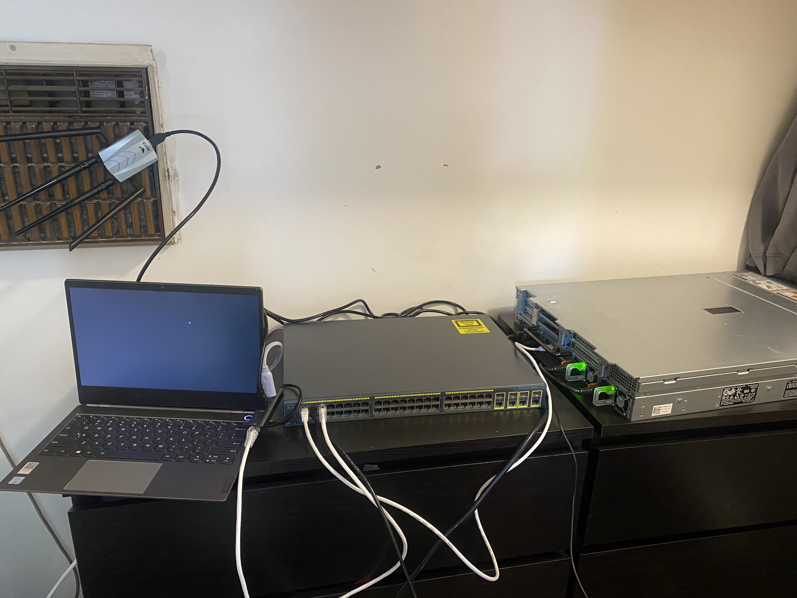

My Home Lab Environment
Due to the lack of entry level roles within the Cybersecurity industry, I knew that one of the biggest hurdles I would face when trying to break into the industry would be gaining real-world/practical/hands-on experiance. As a person who learns best through personal experiance, I decided that the most effective way for me to start applying my knowledge to real-world experiances would be to build a home lab environment.
So I hopped onto facebook marketplace and purchased a second hand Dell R730 server. If that wasn't already overkill enough, the guy threw in a 48 port Cisco Catylst Switch that he no longer needed.
Configuring Dell Server
When I first set up my homelab, I faced a few challenges, but each issue helped me learn something new. My setup started with a network adapter (a Pineapple) connected to my laptop, which was acting as a bridge to my Dell server. I know it sounds ridiculous but this is the early stages of my home lab so don't judge. I didn't even have a server rack yet!

The reason for this workaround was that my router was too far away from the server. I quickly discovered that servers are not designed to rely on WiFi connections, and their processing capabilities will be severly reduced when used in this way. Well we were getting recabling done in a months time, which meant I would be able to connect a router to an ethernet port in my room. Despite this, I was eager to get things running, so I went down to Bunnings and purchased a 15 Meter Cat6 Ethernet cable which I ran all the way through the house from the main router to my room.
Not ideal for the rest of my family, but it was a great temporary solution.